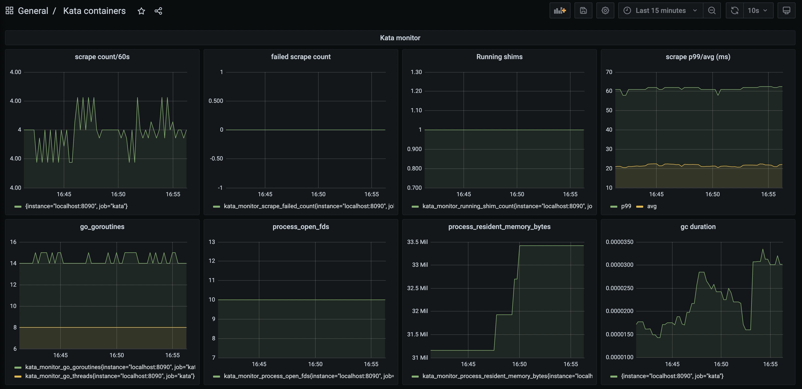

使用 Prometheus + Grafana 监控 Kata Containers
这篇文档主要介绍如何使用 Prometheus 来收集 Kata Containers 的 metrics。
安装 Prometheus 和 Grafana
安装 Prometheus
$ wget https://github.com/prometheus/prometheus/releases/download/v2.26.0/prometheus-2.26.0.linux-amd64.tar.gz
$ tar zxf prometheus-2.26.0.linux-amd64.tar.gz
编辑 Prometheus 配置文件
$ cd prometheus-2.26.0.linux-amd64/
$ vi prometheus.yml
在 scrape_configs 部分的最后，加入下面的 target：
- job_name: 'kata'
static_configs:
- targets: ['localhost:8090']
然后启动 Prometheus：
$ ./prometheus
安装 Grafana
下载并安装 Grafana：
$ wget https://dl.grafana.com/oss/release/grafana-7.5.5.linux-amd64.tar.gz
$ tar -zxf grafana-7.5.5.linux-amd64.tar.gz
启动 Grafana 服务：
$ cd grafana-7.5.5/
$ bin/grafana-server
然后打开 Grafana 的管理界面，默认端口为 3000，比如 http://<your_server>:3000。之后需要添加一个数据源，才能在 Grafana 中显示 Prometheus 的数据。
默认的登录用户名和密码为 admin/admin。
在添加数据源页面，选择 Prometheus 类型，然后在 HTTP 中的 URL 输入 http://localhost:9090 即可，因为 Prometheus 和 Grafana 运行在同一台机器，所以这里可以使用 localhost 作为主机名。否则的话需要使用能联通的方式，比如直接使用域名或者IP地址。
点击底下的 "Save & Test"，如果一切正常，就可以导入一个示例的 Dashboard 了。
这个 Dashboard 可以从 Grafana 的管理界面导入。
启动 kata-monitor
kata-monitor 进程运行在宿主机上，负责从各 Kata Containers 容器/VM中获取 metrics，并返回给 Prometheus。
默认情况下 kata-monitor 不需要指定参数，它会监听在本地的 8090 端口，这也是在 Prometheus 配置文件中 target 指定的端口号。如果要修改这个端口号，则需要注意两处要保持一致。
kata-monitor 启动后，就可以在 Prometheus targets 页面（ http://<your_server>:9090/targets ）看到我们的 target 的状态了（UP还是DOWN）。
这时候到 Grafana 页面，找到我们刚才导入的 Dashboard，就可以看到类似下面的页面。

Kata Containers 目前采集了下面几种类型的 metrics：
- Kata agent metrics：agent 进程的 metrics
- Kata guest OS metrics：VM 中的 guest metrics
- Hypervisor metrics：hypervisor 进程的 metrics（如果 hypervisor 本身提供了 metrics 接口，比如 firecracker，也会采集到 Kata Containers 的 metrics）
- Kata monitor metrics：kata-monitor 进程的 metrics
- Kata containerd shim v2 metrics：shimv2 进程的 metrics
具体的 metrics 信息，可以参考这里的文档。